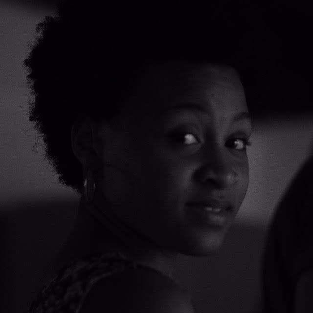

Funções / Pesquisa e desenvolvimento
As informações de cada perfil são de responsabilidade das profissionais.
Você quer conhecer profissionais de quais estados?
Marcar/Desmarcar todos
CARREGANDO ...
Beatriz de Oliveira (SP)
Beatriz de Oliveira
18 anos | São Paulo (SP)
beeea3@hotmail.com
Olá. Sou estudante de produção audiovisual no segundo semestre, estou aprendendo sobre os diversos segmentos da área. Pretendo atuar na produção e direção de arte, mas agora busco ter experiência e aprendizado em projetos que eu possa acrescentar.
https://www.facebook.com/beatriz.oliveira.14019338?ref=bookmarks
Outras atividades de Beatriz de Oliveira
Produção
Amostra de vídeo
 Beatriz Vieirah (BA)
Beatriz Vieirah (BA)
Beatriz Vieirah
24 anos | São Félix (BA)
b.vieirah1@gmail.com
Graduanda em Cinema e Audiovisual pela Universidade Federal do Recôncavo da Bahia, ativista negra feminista, fotógrafa, coordenadora e idealizadora do Projeto Seminário Cinema Negro Brasileiro. Tem experiência no cinema e vídeo filmmaker, assistente de direção, câmera, roteiro e preparação de atores, com destaque para as obras cinematográficas, Lápis de Cor, O Cadeado, Entre Passos, Sinfonia de Uma Pequena Cidade, Noite de Baile, telefilme O milagre dos pássaros, videoclipe Mau Achismo e O corpo é meu. Já ministou oficinas de Produção de Vídeo. Suas pesquisa gira em torno de Mulheres Negras no Cinema Brasileiro. E atualmente está produzindo Lélia Gonzalez - O Filme, enquanto diretora.
Outras atividades de Beatriz Vieirah
Direção |
Direção de fotografia |
Roteiro |
Oficinas e cursos livres
Amostra de vídeo
 Carem Abreu (MG)
Carem Abreu (MG)
Carem Abreu
46 anos | Belo Horizonte (MG)
caremabreu@gmail.com
Cineasta, jornalista e capoeirista angoleira. Atuo desde 1996 nos setores Audiovisual e de Culturas Populares como Pesquisadora, Gestora Cultural, Diretora, Roteirista, Produtora Executiva, de Elenco e de Set. Idealizadora da Mostra CineAfroBH.
ATUAÇÃO PROFISSIONAL: ATOS CENTRAL DE IMAGENS. youtube.com/user/atosimagens
Desde 2007: Produtora Executiva, Diretora e Roteirista Atuais 2015: produção executiva do filme e seriado CIDADE DO SOL (Ação, 2015MG, Guto Aeraphe) webseriados.tv (vimeo.com/ondemand/webseriecidadedosol).
PRÊMIO: novembro 2015 Edital de Intercâmbio do MINC > Oficina de Produção Audiovisual em DAKAR, Senegal, na Associação Batuk de Comunicação e Cultura.
http://www.mostracineafrobh.com
Outras atividades de Carem Abreu
Direção |
Exibição |
Ensino superior |
Oficinas e cursos livres |
Produção |
Roteiro
Amostra de vídeo
 Keila Serruya (AM)
Keila Serruya (AM)
Keila Serruya
Manaus (AM)
keilaserruya@gmail.com
Formada em comunicação social, manauara, diretora audiovisual, artista visual e produtora. Diretora de obras audiovisuais “Nessa Cidade Todo Mundo Já Bebeu na Bica” e “ASSIM”, que circularam em festivais nacionais e internacionais e hoje estão sendo exibidos em canal fechado. Produtora e assistente de direção em projetos series, curtas, longas metragens, espetáculos e intervenções. Esteve a frente de projetos como MIVA - Mostra Internacional de Videodança da Amazônia, Até o Tucupi, Papo por frame, série de TV na Boca do Povo, serie de TV infantil Buzzz&Bizz, Noite Negra, Grito Rock Manaus dentre outros. Atualmente faz parte do grupo Picolé da Massa e é gestora do DaVárzea das Artes.
Outras atividades de Keila Serruya
Assistência de Direção |
Cineclubismo |
Continuidade |
Direção |
Exibição |
Edição |
Fotografia Still |
Produção
Amostra de vídeo
 Luh Moreira (SP)
Luh Moreira (SP)
Luh Moreira
31 anos | São Paulo (SP)
luhmoreira.producao@gmail.com
Formada em RTV, cursou pós-graduação em Produção Executiva e Gestão de Televisão, possui conhecimento nas áreas de gestão e produção de projetos de capacitação cinematográfica (principalmente voltados para a juventude oriunda de comunidades populares e periféricas), produção de curta e longa-metragem (set e mesa), produção cultural, mídias sociais, desenvolvimento e gestão de projetos audiovisuais entre outros conhecimentos de utilidade para o setor.
Outras atividades de Luh Moreira
Assistência de Direção |
Coordenação de Projeto |
Oficinas e cursos livres
|
Produção
Amostra de vídeo
 Monique Rodrigues (RJ)
Monique Rodrigues (RJ)
Monique Rodrigues
Rio de Janeiro (RJ)
monique010982@gmail.com
Sou formada em Cinema com especializações em roteiro e pesquisa, tendo experiência em festivais, mostras, curta metragens e produção de conteúdo para web.
Outras atividades de Monique Rodrigues
Cineclubismo |
Coordenação de Projeto |
Crítica |
Direção |
Direção de Arte |
Produção |
Programação e curadoria |
Roteiro
Amostra de vídeo
 Natalie Matos (MG)
Natalie Matos (MG)
Natalie Matos
21 anos | Belo Horizonte (MG)
natalie.m.moura@gmail.com
A única certeza que mora em mim é a de que a cada passo aprendo algo novo e construo minha identidade. Como uma árvore que cresce regada ao amor e às dificuldades, dá bons frutos e flores, mas também amadurece antes da hora e às vezes até mesmo cai, mas, sempre lembra que tudo que se vive fortalece suas raízes. E sempre quando eu precisar vou ao meu interior e discuto comigo, para entender esse meu eu que às vezes recusa falar e prefere apenas sentir. Gradua em Cinema e Audiovisual e Técnico em Artes Visuais, hoje tenho projetos de visibilidade ao protagonismo da mulher preta e a juventude periférica.
http://nataliem-moura.wixsite.com/nataliematos
Outras atividades de Natalie Matos
Animação |
Assistência de Direção |
Captação de Recursos |
Captação de Som |
Cenografia |
Continuidade |
Correção de cor |
Direção |
Direção de Arte |
Direção de Fotografia |
Edição |
Fotografia Still |
Iluminação |
Mixagem e efeitos sonoros |
Preparação de Elenco |
Produção |
Roteiro
Amostra de vídeo
 Naymare Azevedo (RN)
Naymare Azevedo (RN)
Naymare Azevedo
24 anos | Natal (RN)
naymareazevedo@gmail.com
Naymare Azevedo, produtora executiva, gestora de políticas públicas e marketing cultural. Diretora criativa do Espaço Criativo Aayabá e coordenadora do projeto de formação criativa do AFROTONIZAR.
Outras atividades de Naymare Azevedo
Assistência de Direção |
Atuação |
Captação de Recursos |
Cineclubismo |
Coordenação de Projeto |
Direção |
Oficinas e cursos livres
|
Produção
Amostra de vídeo
 Priscila Oliveira (SP)
Priscila Oliveira (SP)
Priscila Oliveira
28 anos | Valinhos (SP)
priscifch@gmail.com
Sou formada em Ciências Sociais e Midialogia, pesquiso direção de criança para cinema no curso Mestrado em Artes da Cena. Minha formação e experiências estão voltadas para roteiro e direção, mas gosto de ampliar meus conhecimentos teóricos e práticos em outras áreas do audiovisual. Também tenho interesse em trabalhos que envolvam o negro e a mulher no cinema (na frente e atrás da câmera), principalmente em relação à construção de personagens.
https://www.facebook.com/ameiavista
Outras atividades de Priscila Oliveira
Assistência de Direção |
Direção |
Ensino superior |
Figurino |
Fotografia Still |
Gerência de Mídia |
Oficinas e cursos livres |
Preparação de Elenco |
Produção |
Programação e curadoria |
Roteiro
Amostra de vídeo
 Sarah Brito (RS)
Sarah Brito (RS)
Sarah Brito
34 anos | Porto Alegre (RS)
sarahbrito@gmail.com
Sarah Brito é documentarista e gestora cultural. Atua com planejamento e gestão cultural, realizando projetos em parceria com o Ministério da Cultura, IPHAN, Instituto Brasileiro de Museus, FUNARTE, Petrobrás, entre outros. Como documentarista seus projetos envolvem o diálogo entre cultura digital, memória e culturas tradicionais, especialmente de matriz afrogaucha. Entre seus trabalhos mais recentes, destaca-se o média-metragem "Batuque Gaúcho". O projeto é vencedor do prêmio Etnodoc, realizado pelo IPHAN com financiamento da Petrobrás, levado ao ar na TV Brasil em 2015. É fundadora da Puro Movimento, organização que provoca diálogo entre cultura e marcas.
http://puromovimento.cc
Outras atividades de Sarah Brito
Captação de Recursos |
Coordenação de Projeto |
Fotografia Still |
Pesquisa e desenvolvimento |
Produção
Amostra de vídeo
Silvia Roberta (BA)
Silvia Roberta
27 anos | Salvador (BA)
srambiental@gmail.com
Possuo formação na área de Gestão do Meio Ambiente. Tenho experiência na área de audiovisual, através de produção de Documentário, captação de recurso e Direção de curtas metragens.